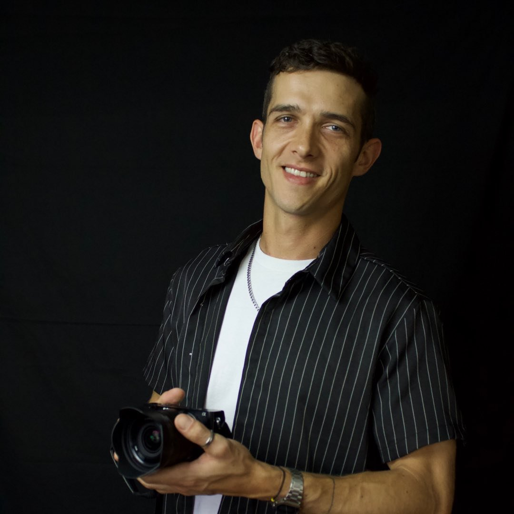

vdpkevin@gmail.com
mobile: 305-906-1342
[linkedin.com/in/kevinvanderpoll](https://linkedin.com/in/kevinvanderpoll)
# Kevin van der Poll
## **Education**
### BrainStation Miami Bootcamp | Miami, FL
- Full-Stack Web Development Program | Jun 2017 – Aug 2017
### Prague College | Prague, Czech Republic
- Higher National Diploma in 3D Animation | Apr 2013 – May 2015
### University of Johannesburg | Johannesburg, South Africa
- Bachelor of Engineering in Computer Science | Jan 2008 – Apr 2012
## **Skills**
- **Languages & Frameworks:** JavaScript, TypeScript, Python, Vue, React, React Native, Node.js, Solidity, Web3.js
- **Backend & Databases:** MongoDB, SQL, Firebase, FaunaDB, REST, GraphQL
- **Testing & Development Tools:** Jest, Mocha, Git, GitHub, JIRA, Test-driven development
- **Data & Analytics:** Google Analytics, Mixpanel, D3.js
- **UI/UX & Design Tools:** Figma, Adobe XD, Canva
## **Experience**
### WebFlow and Web Developer | Electric Flow | Coconut Creek, FL | Apr 2021 - Present
- Engineered Webflow components and automated workflows with Make for improved API integration.
- Automated QA processes, ensuring high performance and user satisfaction for customer-facing features.
- Led MVP development, boosting client sales by 50% and efficiency by 60% with tech-driven solutions.
- Integrated AI tools like ChatGPT to streamline content creation and improve deliverables.
- Collaborated with product and design teams to align solutions with business goals and user needs.
### Full Stack Engineer | Lincoln Network | Remote, TX | Mar 2020 - Apr 2021
- Built scalable solutions with Vue, Node.js, and FaunaDB, boosting non-profit engagement and functionality.
- Led A/B testing initiatives that drove a site-wide layout transformation, significantly boosting UX.
- Collaborated with cross-functional teams to solve complex technical challenges with innovative solutions.
### Blockchain Engineer | Magic Leap | Sunrise, FL | Oct 2019 - Mar 2020
- Developed a blockchain-based security prototype with encrypted biometric data for enhanced security.
- Led cross-disciplinary teams, setting new standards in secure data storage and blockchain.
- Built prototypes with Hyperledger Fabric for advanced decentralized blockchain solutions.
### Full Stack Engineer | Bushido Lab | Wynwood, FL | Oct 2017 - Jun 2019
- Built crypto wallets, tokens, and NFTs with JavaScript and Solidity, driving blockchain innovation.
- Integrated IPFS for secure, decentralized storage in NFT projects.
- Authored technical documentation to support Salesforce customizations and user onboarding.
## **Projects**
### Private Yacht Booking App | Webflow, Memberstack, Make | Apr 2024
- Built a booking system on Webflow and Memberstack, enabling user profiles for unique experiences. Leveraged Make.com for automation, streamlining booking operations and improving user flow.
### Sunchoke Photography Site | Webflow | Jun 2022
- Created a Webflow site with a custom CMS, enabling easy management of categorized photo albums. Implemented a contact form, enhancing user engagement and enabling seamless inquiries.